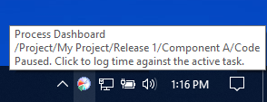
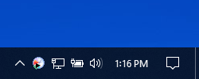

If your operating system supports it, and if you are running version 1.6 or higher of the Java Runtime Environment, the Process Dashboard will display an icon in the system tray. Double-clicking on the dashboard's tray icon will show the main Process Dashboard window.
If you place your mouse over this icon, a tooltip will indicate the name of the active task. If you hold down the Ctrl key and click on the icon, a window will be displayed allowing you to change the active task.

Clicking once on the icon will start/stop the timer. A small "play" indicator appears on the icon to indicate when the timer is running.

A right-click on the icon will display a popup menu. Among other things, this menu duplicates the contents of the configuration menu and the script menu.
In addition, the popup contains a "Reminder" submenu. This menu allows you to enable a timing reminder, which will appear at regular intervals. The reminder will ask whether you are still working on a particular task (or whether you are still idle, depending on the state of the play/pause button). If you often forget to start/stop the timer, this reminder can help you establish a consistent habit of metrics collection.
If you do not wish to use the system tray icon, you can disable it using the option provided in the popup menu. In the future, if you decide that you want it back, you can reenable it via the preferences editor.